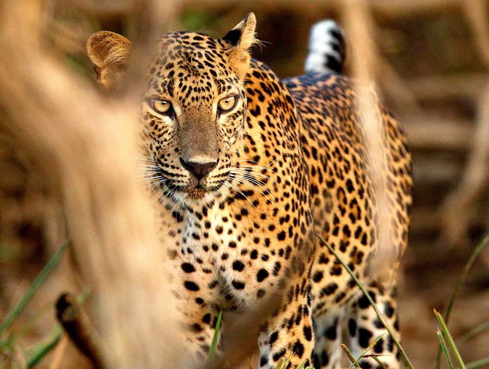
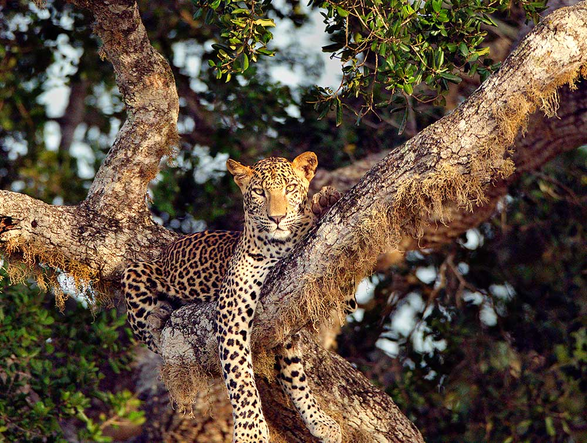
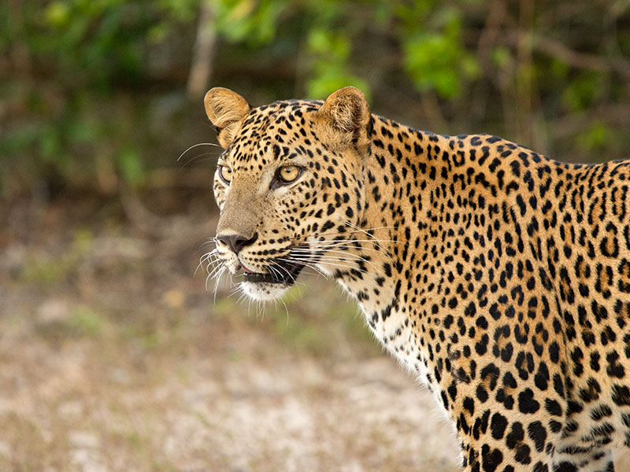
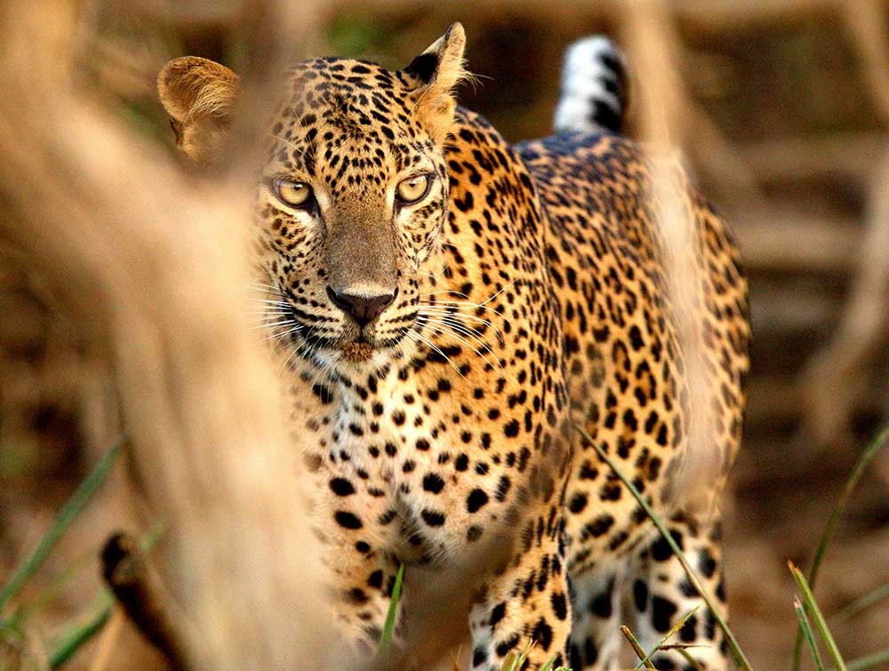
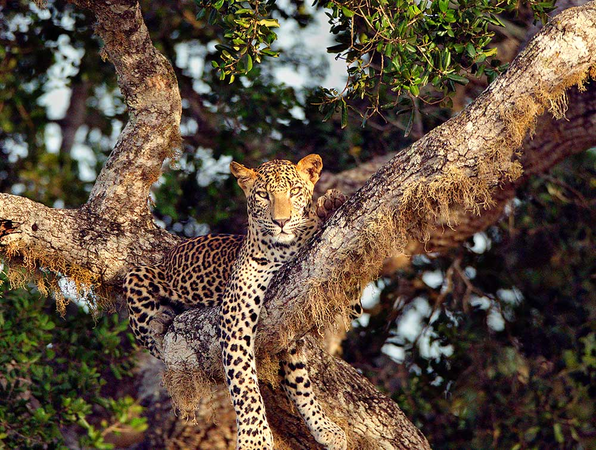
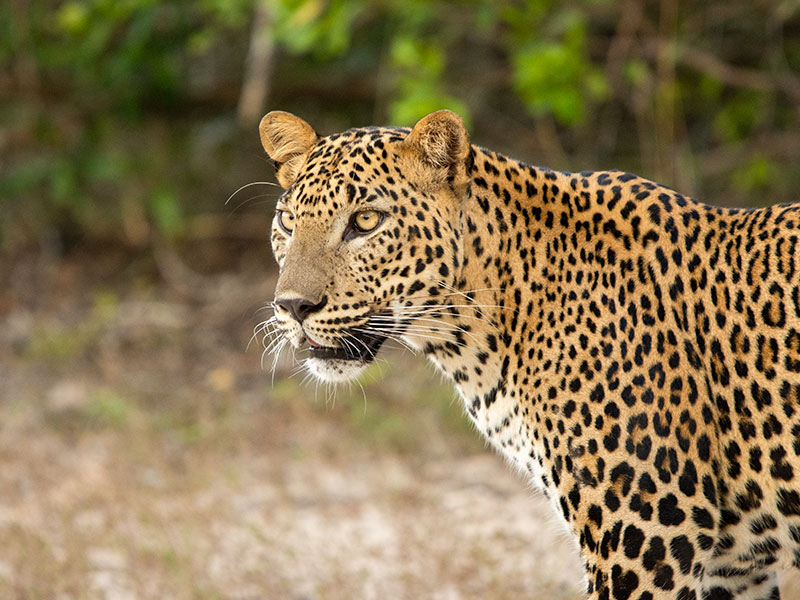

Yala National Park

Yala National Park in Sri Lanka is renowned for its population of elusive and majestic Sri Lankan leopards, making it a globally significant destination for leopard enthusiasts and wildlife photographers. The park's diverse ecosystems, including dry forests and grasslands, provide an ideal habitat for these graceful big cats. The Sri Lankan leopard, a subspecies of the common leopard, is characterized by its golden-yellow coat marked with distinctive dark rosettes. Yala's Block 1 is particularly famous for its higher concentration of leopards, offering visitors a higher likelihood of spotting these elusive creatures during safari excursions. Observing these apex predators in their natural environment, whether prowling through the lush vegetation or resting in the shade, is an exhilarating and unforgettable experience that highlights the vital role Yala National Park plays in the conservation of this iconic species.
Wilpattu National Park

Wilpattu National Park, situated in the northwestern part of Sri Lanka, is another key wildlife sanctuary where the elusive Sri Lankan leopard commands attention. As the largest national park in the country, Wilpattu offers a unique landscape of dense scrub jungles, lakes, and vast grassy plains, providing an ideal environment for these stealthy predators. The Sri Lankan leopard, characterized by its golden coat adorned with distinctive rosettes, finds a thriving population within the park. Wilpattu's varied topography and extensive forest cover contribute to the challenge of spotting these big cats, enhancing the thrill of wildlife safaris. With patience and a keen eye, visitors to Wilpattu may be rewarded with the mesmerizing sight of a leopard silently navigating through its natural habitat, offering a rare and awe-inspiring glimpse into the lives of these majestic creatures in one of Sri Lanka's most expansive and biodiverse national parks.
Horton Plains National Park

Horton Plains, located in the central highlands of Sri Lanka, is not only renowned for its breathtaking landscapes but also harbors a population of the elusive Sri Lankan leopard. These leopards, a subspecies known for their distinctive golden coat adorned with dark rosettes, navigate the diverse terrain of Horton Plains with grace and stealth. The park's unique combination of montane forests, grassy plains, and cloud forests provides an ideal habitat for these magnificent creatures. Visitors to Horton Plains may be fortunate enough to catch a glimpse of these elusive leopards, whether they are silently prowling through the dense vegetation or resting in the shadows. The presence of leopards in Horton Plains adds to the park's ecological significance, underscoring the delicate balance of nature in this captivating and biodiverse region.
Things to know about Leopards
Unique Appearance :
Sri Lankan leopards have a distinct appearance with a golden-yellow coat marked by dark rosettes. Their fur coloration is often lighter than that of leopards in other regions, making them easily distinguishable.
Solitary Behavior :
Sri Lankan leopards are predominantly solitary animals. They establish and fiercely defend their territories, which can range from 20 to 50 square kilometers.
Highly Skilled Predators :
Sri Lankan leopards are skilled and agile predators, exhibiting excellent climbing and swimming abilities. They are known for their solitary and nocturnal behavior, making them elusive and challenging to spot in the wild. Their diet includes a variety of prey such as deer, wild boar, and smaller mammals, showcasing their adaptability as opportunistic hunters.
Endangered Status :
The Sri Lankan leopard is classified as endangered on the International Union for Conservation of Nature (IUCN) Red List. Habitat loss, human-wildlife conflict, and illegal wildlife trade pose significant threats to their survival. Conservation efforts are crucial to protecting and preserving this iconic species.
Leopard season
August is the driest period of the dry season in the northern and eastern parts of the island, where all wildlife parks with leopard populations are located. During the dry season, wild animals are facing increasing problems to find drinking water in the parks. In particular, spotted deers, favourite prey of leopards, gather at the few remaining ponds. This is why August is a month of high chances to see the largest cat species occuring in Sri Lanka close to those watering places, too, as these predators are at the top of the food chain. Leopards freely roam in the jungle and open areas of Wilpattu Park day and night. They prefer open grasslands and sandy areas for relaxing in the dawn and dusk. Since the density of leopards is increased in August, in Yala Park and Wilpattu Park alike, chances are high to observe more than one of these magnificiant animals, which are called the beauty of the Sri Lanka's jungles.
What Travellers Should Know About Leopards In SriLanka
The Ceylon leopard or Sri Lanka leopard is a subspecies called Panthera pardus kotiya. Ironically, “kotiya” means “tiger” in today’s spoken Sinhala. At least, the traditional Sinhala name “kotiya” has been used for tigers in recent decades. An unequivocal Sinhala term meaning leopard is “diviya”. The Tamil name of the species is “chirutthai”. The nomenclature “kotiya” for the subspecies was introduced by the first zoologist who described the Sri Lanka leopard scientifically, P.E.P. Deraniyagala. His assumption of a distinct Sri Lankan subspecies was based on morphological differences between India’s and Ceylon’s leopards. Sriyani Mittapala’s recent analysis of the mitochondrial DNA confirmed this assumption.The Sri Lanka leopard is one of seven or eight Asian subspecies of leopards. The genetic isolation of the Sri Lankan Leopard makes it unique. On the island of Sri Lanka, the leopard is the only representative of the genus Panthera, commonly known as “big cats”.
Image Gallery
 





Human-Wildlife Conflict
Human-wildlife conflict is a significant threat to leopards in Sri Lanka. Encounters with humans can lead to conflicts with severe consequences for both leopards and local communities.
Mechanisms to reduce the threat include the implementation of community-based conservation programs and the development of wildlife-friendly land-use practices.
.png)
Illegal Wildlife Trade
Illegal wildlife trade poses a serious threat to leopards, with their body parts being sought after for traditional medicine and ornamental purposes.
Efforts to reduce this threat involve strict law enforcement, public awareness campaigns, and collaboration with international organizations to combat the illegal wildlife trade.